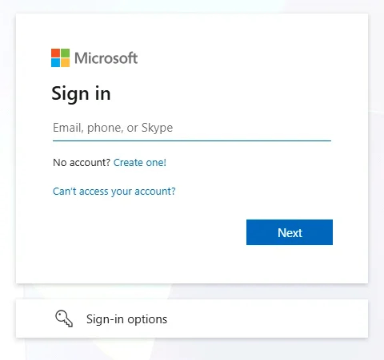
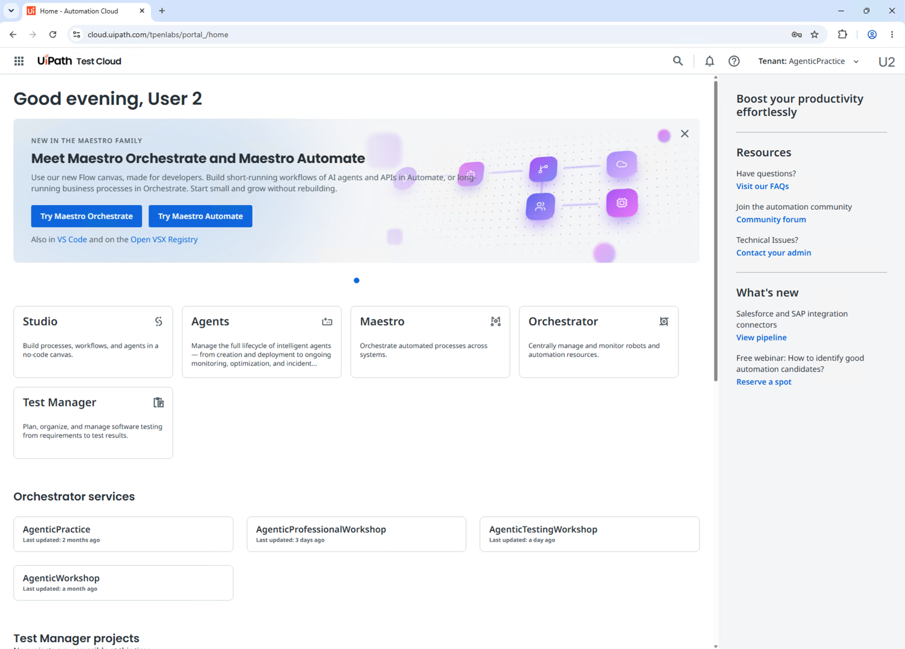
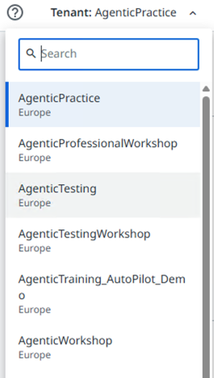

第 3 步，共 3 步
🔑 登录¶
在虚拟机中用你的工作坊账号登录 UiPath，并检查你能看到两个工作坊租户。
🌐 用你的工作坊账号登录¶
- 在虚拟机中打开 Google Chrome，访问 https://cloud.uipath.com/tpenlabs。不要使用工作坊页面上的 Open UiPath：它会打开另一个地址。
-
选择 Continue with Microsoft。
-
输入 UiPath sign-in 中的 Username，然后选择 Next。

-
输入 UiPath sign-in 中的 Password，然后选择 Sign in。
-
https://cloud.uipath.com/tpenlabs 的主页随即打开。检查地址栏显示的是
cloud.uipath.com/tpenlabs。
使用工作坊账号，而不是你自己的账号
如果 Chrome 用另一个账号让你登录了，请先退出登录，再通过 Continue with Microsoft 用你的工作坊账号重新登录。
✅ 检查你的租户¶
你的工作坊账号可以访问两个租户：AgenticWorkshop 和 AgenticTestingWorkshop。检查你能看到这两个租户。
- 在右上角，打开 Tenant 选择器。
-
检查列表中有 AgenticWorkshop 和 AgenticTestingWorkshop。想更快找到，可以在 Search 中输入名称。

-
如果缺少其中一个，告诉讲师。
用 Tenant 选择器切换租户
讲师会告诉你每个工作坊使用哪个租户。开始之前，在 Tenant 选择器中选择它。主页上的 Orchestrator services 也列出了同样的租户。
保持这个标签页打开
工作坊期间你还会回到这个 Chrome 标签页。如果某个页面出现空白或显示旧页面，在新标签页中打开它，并再次检查租户。
可以开始工作坊了
你已经用工作坊账号登录 https://cloud.uipath.com/tpenlabs，Tenant 选择器中显示 AgenticWorkshop 和 AgenticTestingWorkshop。你的环境已经为工作坊准备好了。